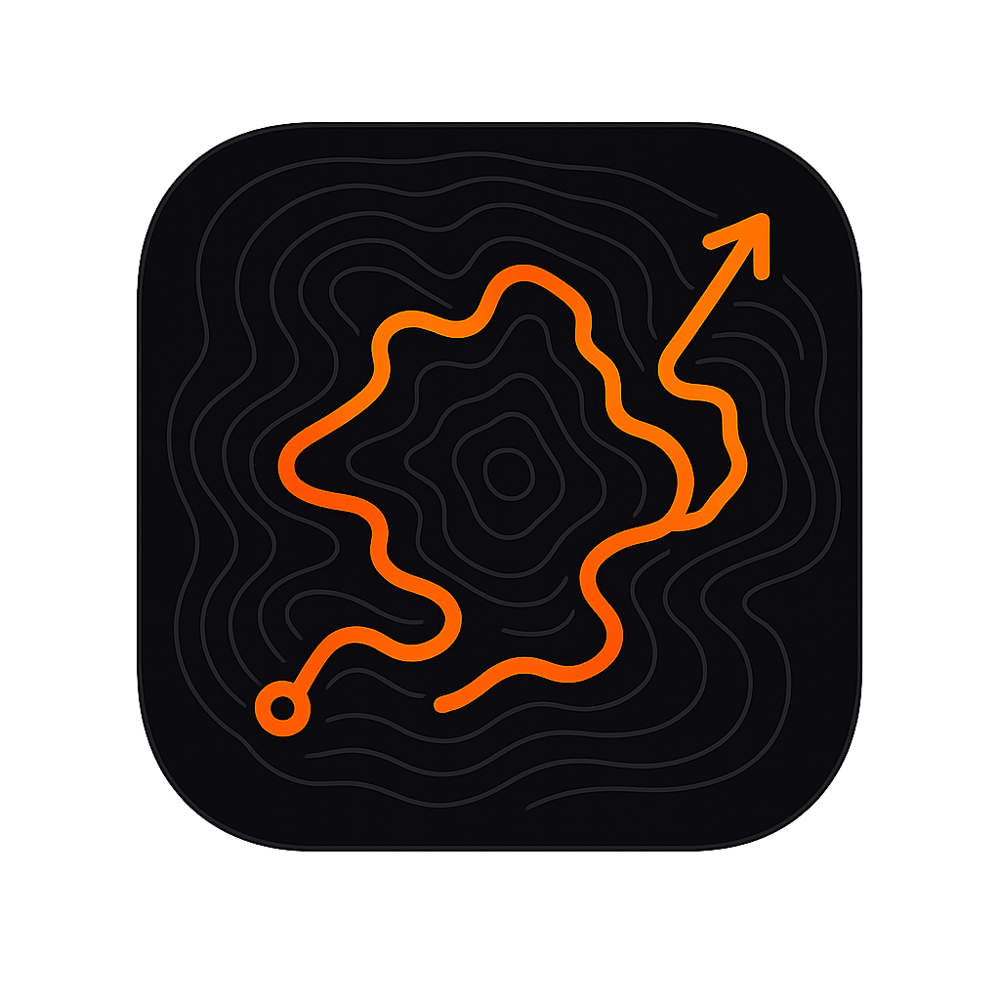

Ascent Strava
A personal Strava analytics dashboard: stats, charts, a ride heatmap, segment PRs, gear tracking, trophies, and shareable 9:16 story cards for your rides. Connects to your own Strava account with your permission — your tokens and activities stay in your browser.